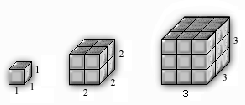

Item: tTableVisualExtendOtherRecursive1a
Stem:
Enter the volume when the edge length of a cube is 4 (A in the table):
Stimulus:

The volume of the three cubes above is shown in the table below.
| Edge Length |
Volume |
| 1 |
1 |
| 2 |
8 |
| 3 |
27 |
| 4 |
A |
Inputs:
- Enter the value for A:
Key:
- Observable: 64.
Score: 1;
Evidence Value: 1.
-
Student:Correct, good job!
-
Teacher:Student answered correctly.
- Observable: 16.
Score: 0;
Evidence Value: 0.
-
Student:Sorry, that's not right. It looks like you squared the edge length, but you needed
to cube it (4 * 4 * 4 = 64). In problems like these, it helps to check
the rule you've come up with against all the pairs of numbers.
-
Teacher:Looks like the student did 4 * 4, and forgot the last multiplication.
- Observable: 36.
Score: 0;
Evidence Value: 0.
-
Student:Sorry, that's not right. It looks like you multiplied the edge length by 9, but you needed
to cube it (4 * 4 * 4 = 64). In problems like these, it helps to check
the rule you've come up with against all the pairs of numbers.
-
Teacher:Looks like the student looked at the relationship between edge length=3 and
volume=27, but didn't check it against the other numbers.
- Observable: 32.
Score: 0;
Evidence Value: 0.
-
Student:Sorry, that's not right. It looks like you multiplied 4 * 8, but you needed
to cube the side (4 * 4 * 4 = 64). In problems like these, it helps to check
the rule you've come up with against all the pairs of numbers.
-
Teacher:Looks like the student looked at the relationship between edge length=3 and
volume=27, but didn't check it against the other numbers.
- Observable: .
Score: 0;
Evidence Value: 0.
-
Student:Sorry, that's not right. To solve problems like this, you need to find the edge length
and then cube it. For this problem, the edge length is 4, so 4 * 4 * 4 = 64 (the volume).
In problems like these, it helps to check
the rule you've come up with against all the pairs of numbers.
-
Teacher:Student answered incorrectly.
Metadata:
Item Node: tTableVisualExtendOtherRecursive1a,
Difficulty: 1.
Proficiencies: ExtendOtherRecursive,
TableOtherRecursive,
VisualOtherRecursive.